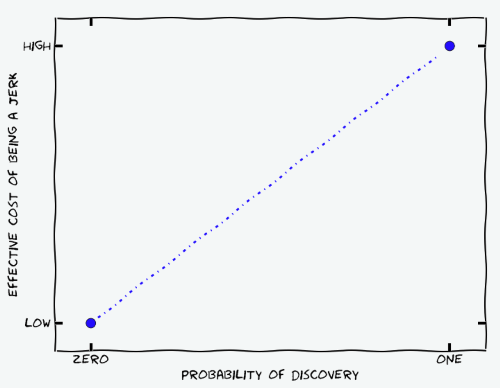
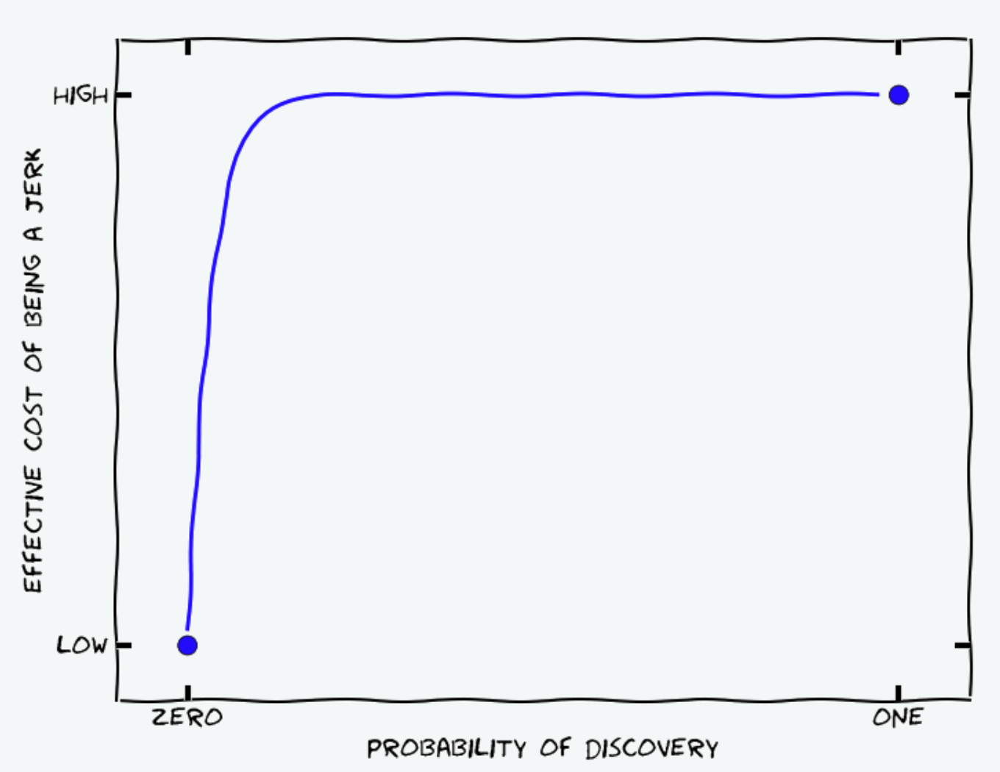

Things I Wish I Knew Sooner
Published Last edited
I’m 25 and an above-average successful person, but not wildly successful, and life has dealt me just about every starting advantage possible. So I can take the outside view and realize that this advice will be as mid as every other ‘life advice’ Substack article I’ve read. I’m going to write it anyway, for fun. (And I still can’t help holding the inside view that this is great advice).
General #
Bias Towards Exploring Instead of Exploiting
Most people, myself included, are too loss-averse, too risk-averse, and too focused on the short term (citation needed, maybe[1]). If you’re young and considering quitting your job and trying something totally new, you probably should.
Get Shots on Goal
You’ll probably suck at most things. Everyone knows it, yet it’s hard to internalize: no one will remember your voice crack during your recital, the interview you bombed, your turnover in the final minutes of the big game. In fact, as Matt Levine keeps exhorting, people will be impressed that you were the one holding the ball in the final minutes, and will want you on their team next time.
Always Be Reflecting
How matters less than how much. Meditation is great. Short or long, active or passive, Vipassana or Transcendental. Journaling is great. Therapy is great. Taking long walks in the woods is great. Talking about your feelings with your friends is great. I don’t feel strongly that any of these is better than any other for you. I do feel strongly that you should earnestly try all of them.[2]
Explicitly Value Your Time
It’s way too easy to go through life buying or not buying things based on what feels lavish. I don’t do that. My time is worth about $100 per hour. It costs $30 to buy Doordash and save myself 45 mins on cooking dinner. Done, every time. It costs $80 and saves an hour to uber down to the Peninsula instead of taking the train. I don’t hunt on Facebook Marketplace for special deals, I own a fancy monitor and keyboard to get work done a little faster, I live close to the office. All easy trades.[3]
Always Be Looking for Positive Sum Trades
Even if your end of the bargain is negative. To be concrete: if you could spend 10 minutes tutoring someone at work to save them 15, you should do it. Over and over. Even if you never get any credit or anything in return.
You should be a good person even if no one will ever find out. Paul Christiano has an excellent logical argument for why here (just in reverse, why not to be an asshole):
You might think that the [the cost of being an asshole] looks something like this:

But actually I don’t think the graph looks like this.
Suppose that Alice and Bob interact, and Alice has either a 50% or 5% chance of detecting Bob’s jerk-like behavior. In either case, if she detects bad behavior she is going to make an update about Bob’s characteristics. But there are several reasons to expect the 5% chance will have a 10x larger update if it actually happens:
- If Alice is attempting to impose incentives to elicit pro-social behavior from Bob, then the size of the disincentive needs to be 10x larger. …
- For whatever reference class Alice is averaging over (her experiences with Bob, her experiences with people like Bob, other people’s experiences with Bob…) Alice has 1/10th as much data about cases with a 5% chance of discovery, and so (once the total number of data points in the class is reasonably large) each data point has nearly 10x as much influence.
- In general, I think that people are especially suspicious of people cheating when they probably won’t get caught (and consider it more serious evidence about “real” character), in a way that helps compensate for whatever gaps exist in the last two points.
In reality, I think the graph is closer to this

My tiny contribution is the trivial corollary: if you engage in good behavior that people have only a small chance of detecting, and they detect it anyway, they will make a correspondingly large update in favor of you being a good person.[4]
Health #
Every time I make a grand unified theory of health, I laugh at it a couple years later. So heavy dose of salt here. That being said:
- Put much more weight on your physical sensations than you think is reasonable. No one knows what the hell is happening in your body, and it’s very difficult to convey your sensations in words. At some level I am a fan of trying fad health philosophies (keto, veganism, anti-inflammatory diet, paleo, etc.) because they provide good fodder for bodily exploration. But don’t over-intellectualize. Try the new thing, keep what feels good, throw away what doesn’t. Trust your sensations over a book when deciding what’s healthy.
Work #
Collaboration
tldr: Talk to people more, don’t be anxious about how you’re being perceived, do be anxious about how good of a job you’re doing.
- The #1 thing that will dictate how much you like your job is your coworkers. You can’t really control this when applying to big companies, but when choosing between small ones you can and should.
- When I manage someone, I meet with them every day for at least the first month, if nothing else to just chat about what they got stuck on that day. People get stuck a lot and are too embarrassed to ask questions.
- Your manager probably isn’t going to put time on your calendar to meet with you every day and answer your questions. No matter. You should find them and talk to them every day. To get their attention, you’ll have to have some specific question, but the point of talking to your manager is to discover unknown unknowns and get feedback, even if you’re not sure what feedback you’re looking for. So come with half-baked thoughts and open-ended questions: “I spent 2 hours on this, which feels like too long, is there a better way?” “Our logic for widget deduplication seems tremendously important and no one is working on it, why?” “The widget orchestration codebase is a mess.”
- If you own something, don’t just try to do what your boss did before handing off the task to you. Own it. Cancel the stupid meeting. Improve the workflow. Expand the program.
- Be very clear about responsibility, even for seemingly tiny things. It’s so quick to say “yours to respond to Alice’s email.”
Efficiency
You will spend 40-80 hours a week on your computer for your entire working career. Get incredibly good at using this machine.
- Learn to use vim shortcuts, then use them everywhere (ie in vimium and Homerow).
- Use hotkeys everywhere, especially if you write code.
- Pay for at least one monitor everywhere you work regularly, probably two or three.
- Buy a great keyboard and mouse. Not enough people try mechanical and split keyboards. (I haven’t seen many people who feel great about dvorak or ortholinear keyboards, but feel free to try these too).
Mindset
The following is going to be much more relevant for ambitious people pursuing careers in lucrative domains.
- Treat your job as if you’ll be there forever. I repeatedly overestimate the importance of the things to accomplish this week and underestimate the importance of learning things and improving processes.
- If you don’t like your job, quit sooner rather than later. Not every job will be ikigai - maybe you’re selling out to pay off student loans, or taking a below-market salary to do something important. But whatever tradeoff you’re making, you should be stoked about it. You’ll never do your best work if you’re bored or you feel like your employer is taking advantage of you. And ‘doing great work’ is the first order goal of your career that you should probably be optimizing harder for.
Negotiation
- Always negotiate on comp.[5] Do it even though it feels rude and assertive and you’re grateful to have gotten the job and you’ll take it if they refuse all your demands. Just do it. You’ll spend five hours in advance agonizing about how rude you’re being, five minutes on the phone with a recruiter summoning all your nerves to ask for 50% more, and five years making 20% more and feeling grateful to your past self. Do it.
- Corollary: if you’re kicking ass at your job, ask for a raise and a promotion, cycles and timelines be damned. This is again a negotiation, and you should ask for much more than you’d be happy to receive.
Social #
In early high school I had crippling social anxiety and would convince myself to never attend any social function, because I had never been to a social function similar to that one before, and ‘didn’t know what to do.’ Even for things as stupid as walking to the grocery store after school, or getting dinner on Saturday night. So I vowed to myself as a 15 year old that I would never say no any social invitation, indefinitely. This was an excellent decision that I stuck with a little too long. It took me a while to learn that:
- It doesn’t matter if you’ve never done something before and you’ll look stupid. The other person is even more embarrassed for putting you in a situation where you look stupid.
- If you don’t want to do something, your friend doesn’t want you there either. If they repeatedly protest when you say no to invitations, there are issues to unpack.
- Your friends are going to believe contradictory, wildly different things. That’s OK. You should still invite them all to the same function. If you’re worried one of your friends will do something rude or mean, then are you sure you want to be friends with that person?
- Don’t tell lies, even white ones (article to come).
Notes #
Heads or Tails: The Impact of a Coin Toss on Major Life Decisions and Subsequent Happiness by Steven D. Levitt (published 2021). ↩︎
How? I strongly recommend: a 10-day Vipassana retreat; doing all the exercises as you read The Artist’s Way, especially the Morning Pages; learning to forage (book, classes) to become more engaged with nature on your hikes. ↩︎
Of course it’s not quite this simple. Maybe you love cooking, you get work done on the train, and your bike to work is your exercise. Please don’t let this be your excuse to say ‘eh the math is too complicated, I’m not even going to try to frame this as trading dollars for time.’ ↩︎
There is possibly an asymmetry here: if I catch someone doing something really kind that was unlikely to be detected, I make an update towards them being a good person, and an update towards them somehow engineering the situation so that I would discover them (see eg Gatsby showing his war medal). But you could make the same argument in the negative case: if you catch someone being an asshole, you update towards them being an asshole and trying to hide it. ↩︎
Unless your employed is a huge company with a no-negotiating policy. I think most big companies offering jobs to new grads should do this - it’s really stupid that people get paid more just because they’re assertive and try to negotiate. ↩︎